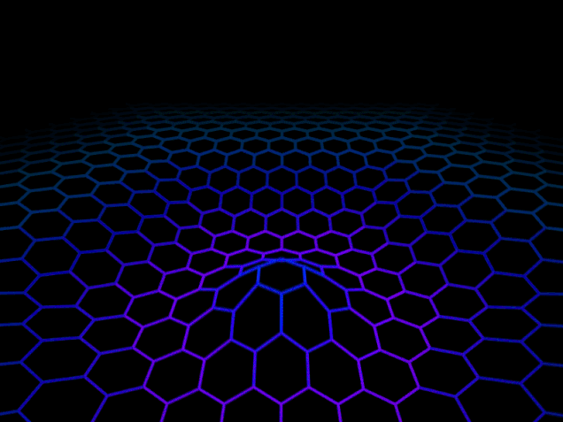

La programación, a veces, asusta. y si le pones estructurada justo es pues, mas .pero en realidad,no es para tanto.Vamos a verlo.
la programacion estructurada es una de corriente que nacio con la vocacion de mejora a la creacion del programa, y de ordenar la forma en la que se creaba cualquier tipo de programa.

CARACTERISTICAS Y VENTAJAS
El teorema del programa estructurado es la base teórica sobre la que se construyó esta nueva forma de programar, ya que nos da la característica fundamental de la programación estructurada.
Postula que, simplemente con la combinación de tres estructuras básicas, es suficiente para expresar cualquier función computable. Parece sencillo, ¿verdad? En realidad, lo es y, precisamente por eso,
se abre inmediatamente el debate entre los programadores que querían continuar con el sistema anterior y los que abrazaban estas nuevas estructuras de control con los ojos cerrados.
Los programas desarrollados con la programación estructurada son más sencillos de entender,
ya que tienen una estructura secuencial y desaparece la necesidad de rastrear los complejos saltos de líneas
Como consecuencia inmediata de lo anterior, otra ventaja es que los programas resultantes tendrán una estructura clara,
gracias a que las sentencias están ligadas y relacionadas entre sí.
La fase de prueba y depuración de los programas se optimiza, ya que es mucho más sencillo hacer el seguimiento de los fallos y errores y,
por tanto, detectarlos y corregirlos.
TRES ESTRUCTURAS BASICAS
Secuencia. La estructura secuencial es la que se da de forma natural en el lenguaje, porque las sentencias se ejecutan en el orden en el que aparecen en el programa, es decir, una detrás de la otra.
Selección o condicional. La estructura condicional se basa en que una sentencia se ejecuta según el valor que se le atribuye a una variable booleana.
Iteración (ciclo o bucle). La estructura de repetición ejecuta una o un conjunto de sentencias siempre que una variable booleana sea verdadera. Para los bucles o iteraciones, los lenguajes de programación usan las estructuras while y for.